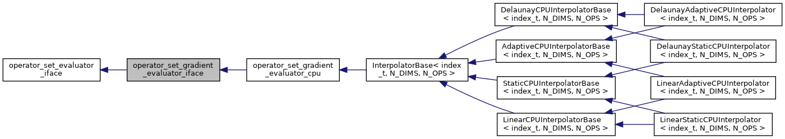
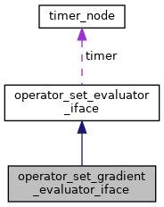

Virtual interface class for evaluation of operators values and their gradients Mainly implemented by a variety of interpolators following OBL method But also can be derived by, for instance, AD-compatible physics kernel For GPU-compatible compilation, the interface provides two options: for computations on host and on device. More...
#include <evaluator_iface.h>


Public Member Functions | |
| virtual int | init () |
| Initialize evaluator, default empty implementation Adds a possibility to initialize the object using properties assigned after construction. More... | |
| virtual int | get_axis_n_points (int axis) |
| Get the number of supporting points for the given axis, default empty implementation. More... | |
| virtual double | get_axis_min (int axis) |
| Get the minimum value for given axis, default empty implementation. More... | |
| virtual double | get_axis_max (int axis) |
| Get the maximum value for given axis, default empty implementation. More... | |
| virtual uint64_t | get_n_interpolations () |
| Get the number of interpolations that took place, default empty implementation. More... | |
| virtual uint64_t | get_n_points_used () |
| Get the number of supporting points used, default empty implementation. More... | |
| virtual uint64_t | get_n_points_total () |
| Get the total number of supporting points in parameter space, default empty implementation. More... | |
| virtual int | evaluate_with_derivatives (const std::vector< double > &states, const std::vector< int > &states_idxs, std::vector< double > &values, std::vector< double > &derivatives)=0 |
| Compute operators values and their gradients for every specified state. More... | |
 Public Member Functions inherited from operator_set_evaluator_iface Public Member Functions inherited from operator_set_evaluator_iface | |
| operator_set_evaluator_iface () | |
| Construct a new operator set evaluator iface object. More... | |
| void | init_timer_node (timer_node *timer_) |
| Initialize timer node to provide timing for operator set evaluation. More... | |
| virtual int | evaluate (const std::vector< double > &state, std::vector< double > &values)=0 |
| Compute operators values for specified state. More... | |
Additional Inherited Members | |
| Public Attributes inherited from operator_set_evaluator_iface | |
| timer_node * | timer |
Detailed Description
Virtual interface class for evaluation of operators values and their gradients Mainly implemented by a variety of interpolators following OBL method But also can be derived by, for instance, AD-compatible physics kernel For GPU-compatible compilation, the interface provides two options: for computations on host and on device.
Member Function Documentation
◆ evaluate_with_derivatives()
|
pure virtual |
Compute operators values and their gradients for every specified state.
- Parameters
-
[in] states Array of coordinates in parameter space, where operators to be evaluated [in] states_idxs Indexes of states in the input array which are marked for evaluation [out] values Evaluated operators values [out] derivatives Evaluated operators gradients
- Returns
- 0 if evaluation is successful
Implemented in InterpolatorBase< index_t, N_DIMS, N_OPS >.
◆ get_axis_max()
|
inlinevirtual |
Get the maximum value for given axis, default empty implementation.
- Parameters
-
axis index of axis in question
Reimplemented in InterpolatorBase< index_t, N_DIMS, N_OPS >.
◆ get_axis_min()
|
inlinevirtual |
Get the minimum value for given axis, default empty implementation.
- Parameters
-
axis index of axis in question
Reimplemented in InterpolatorBase< index_t, N_DIMS, N_OPS >.
◆ get_axis_n_points()
|
inlinevirtual |
Get the number of supporting points for the given axis, default empty implementation.
- Parameters
-
axis index of axis in question
Reimplemented in InterpolatorBase< index_t, N_DIMS, N_OPS >.
◆ get_n_interpolations()
|
inlinevirtual |
Get the number of interpolations that took place, default empty implementation.
Reimplemented in InterpolatorBase< index_t, N_DIMS, N_OPS >.
◆ get_n_points_total()
|
inlinevirtual |
Get the total number of supporting points in parameter space, default empty implementation.
- Returns
- the total number of supporting points
Reimplemented in InterpolatorBase< index_t, N_DIMS, N_OPS >.
◆ get_n_points_used()
|
inlinevirtual |
Get the number of supporting points used, default empty implementation.
- Returns
- the number of supporting points used
Reimplemented in InterpolatorBase< index_t, N_DIMS, N_OPS >.
◆ init()
|
inlinevirtual |
Initialize evaluator, default empty implementation Adds a possibility to initialize the object using properties assigned after construction.
- Returns
- int 0 if successful
The documentation for this class was generated from the following file: